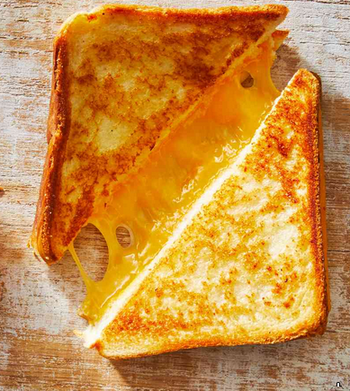

Grilled Cheese

Ingredients
- 2 tablespoons butter, softened, divided
- ¼ small sweet onion, thinly sliced
- 1 teaspoon crushed rosemary
- ⅛ teaspoon onion powder
- salt and ground black pepper to taste
- 2 thick slices Italian bread
- ¼ cup shredded mozzarella cheese
- 1 slice sharp American cheese (such as Cooper®)
- 1 slice provolone cheese
Directions
- Melt butter in a nonstick skillet over medium heat. Cook and stir onion
until starting to brown, about 5 minutes. Transfer to a plate.
- Mix remaining 1 tablespoon butter, rosemary, onion powder, garlic powder, salt, and
pepper in a small bowl. Spread on one side of each slice of bread.
- Place 1 slice of bread buttered-side down in the skillet. Top with onion,
mozzarella cheese, American cheese, and provolone cheese.
Cover with second slice of bread, buttered-side up. Cook until
golden brown, about 3 minutes. Flip with a spatula; cook until
second side is browned and cheeses are melted, about 3 minutes more.
Enjoy!